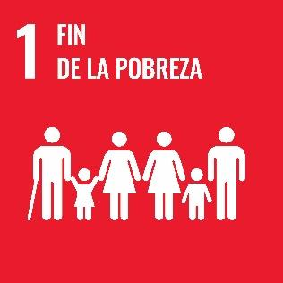
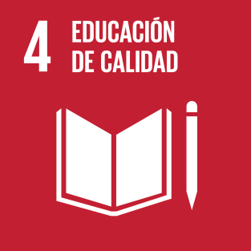
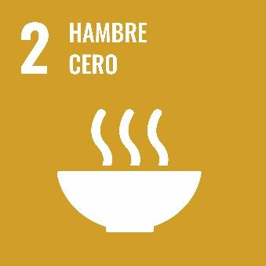
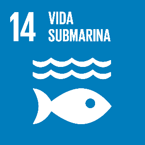
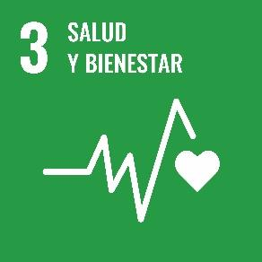
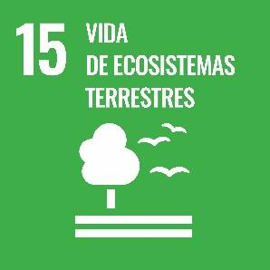
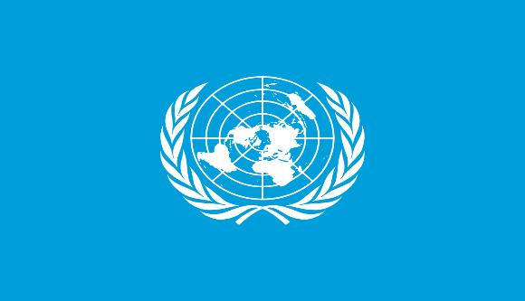
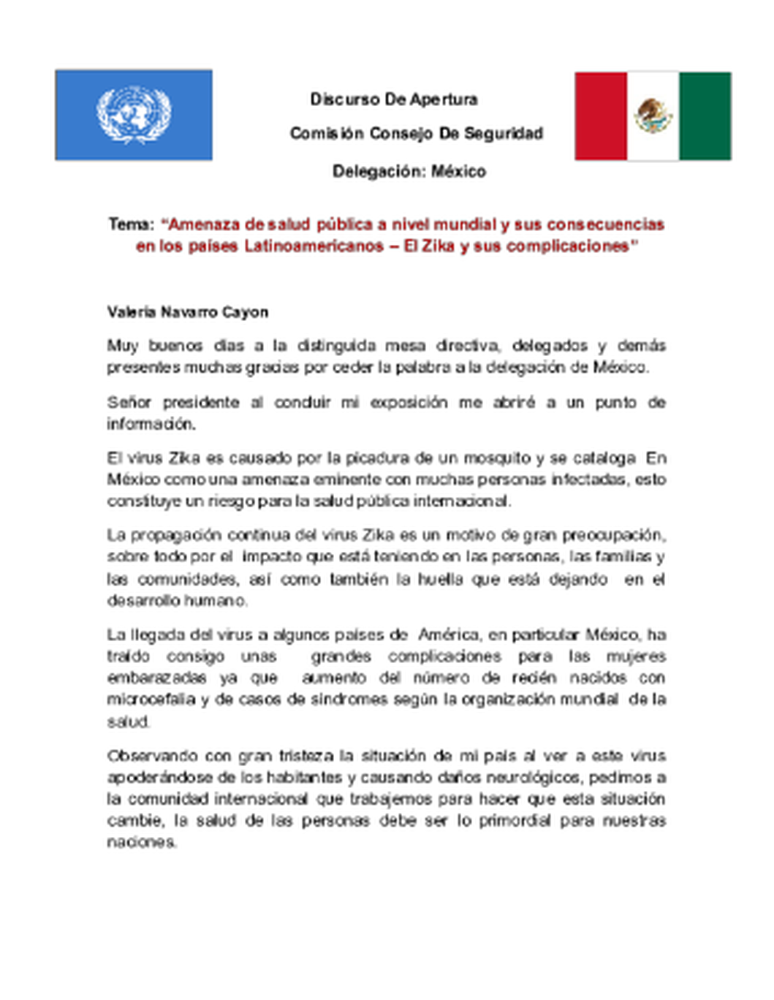

Esta guía te enseña a razonar los temas que se evalúan: ética ambiental, ODS, relaciones internacionales, SIMONU y diplomacia, ONU y derechos humanos. No contiene las respuestas de la evaluación: aquí practicas con casos parecidos pero distintos para que tú mismo llegues a tus propias respuestas.
- Lee la explicación de cada tema.
- Estudia el ejemplo resuelto paso a paso (es otro caso).
- Haz las prácticas; usa "ver pista" antes de rendirte.
- Marca el tema como estudiado y al final haz la autoevaluación.
Mapa: pregunta del examen → sección de la guía
| Preguntas | Tipo | Sección |
|---|---|---|
| 1, 2, 3 | Lectura + concepto ético | 1. Ética ambiental |
| 4, 15, 16, 17, 18 | Símbolos y aplicación de ODS / Agenda 2030 | 2. ODS y Agenda 2030 |
| 5 | Principio de relaciones internacionales | 3. Cooperación internacional |
| 6, 7, 8, 9 | SIMONU, discurso y diplomacia | 4. SIMONU y diplomacia |
| 10, 11, 12, 13, 14 | ONU, órganos, símbolos, derechos humanos | 5. La ONU y los derechos humanos |
| 19, 20 | Preguntas abiertas (resumen y afiche) | 6. Preguntas abiertas |
| Todas | Técnicas para tipo ICFES | Estrategias ICFES |
Los temas de esta guía no están aislados: cada uno explica o aplica a otro. Pasa el cursor (o enfoca con el teclado) una flecha o un tema para leer cómo se relacionan; haz clic en un tema para ir a su sección. En el celular verás la misma información como lista.
Ruta de estudio sugerida
Sigue este orden: cada paso prepara el siguiente. Marcar una casilla actualiza tu progreso.
- Lee primero la pregunta y luego el texto.
- Descarta absolutos: «única», «todos», «siempre».
- Elige la opción que responde lo que se pregunta.
En las pruebas Saber de selección múltiple con única respuesta, cada pregunta trae cuatro opciones y solo una es válida; las otras se llaman distractores.
- Lee primero la pregunta (la última frase) para saber qué buscar.
- Lee el texto subrayando la idea principal y las palabras clave.
- Descarta opciones con palabras absolutas: "únicamente", "exclusivamente", "siempre", "todos", "ninguno", "cualquier".
- Descarta las que contradicen el texto o que no responden lo que se pregunta aunque suenen bonitas.
- Elige la que responde a la pregunta y es coherente con el texto y con el concepto.
Trampas comunes de las opciones
- Verdadera pero irrelevante: dice algo cierto, pero no contesta lo que se pregunta.
- Extremista: lleva la idea al límite ("nunca", "todo").
- Opuesta: dice lo contrario del concepto.
- Repite palabras del texto pero cambia el sentido.
Tomar 1 minuto para clasificar las opciones en "posible / dudosa / descartada" mejora mucho la precisión.
- Antropocentrismo: vale el ser humano.
- Biocentrismo: vale todo ser vivo.
- Ecocentrismo: vale el ecosistema completo.
La palabra «ecología» fue propuesta por el biólogo alemán Ernst Haeckel en 1866.
La ética ambiental pregunta: ¿qué obligaciones tenemos con la naturaleza y con quienes vivirán después de nosotros? Existen varias posturas sobre quién o qué tiene valor moral.
| Postura | ¿Qué tiene valor moral? | Idea clave |
|---|---|---|
| Antropocentrismo | El ser humano | La naturaleza vale por lo que sirve (valor instrumental). Hay versiones moderadas (cuidar porque lo necesitamos) y extremas (todo vale si beneficia al humano). |
| Biocentrismo | Todo ser vivo | La vida tiene valor propio (valor intrínseco). |
| Ecocentrismo | Ecosistemas completos | Importan las relaciones y el equilibrio del conjunto. |
| Ética de la responsabilidad | Quienes resultan afectados por nuestras acciones | Nuestras acciones tienen consecuencias que debemos asumir. |
Vocabulario
- Valor intrínseco: vale por sí mismo.
- Valor instrumental: vale como medio para otro fin.
- Equilibrio ecológico: relación estable entre seres vivos y su entorno.
- Generaciones futuras: personas que aún no han nacido pero serán afectadas por lo que hoy hacemos.
- Obligación moral: deber que nace de lo que consideramos correcto, no solo de una ley o un negocio.
Ejemplo resuelto (otro caso): "La laguna de Villa Aurora"
Texto inventado: Un municipio planea secar una laguna donde habitan aves migratorias para construir un centro comercial. Los defensores dicen que traerá empleo; los opositores, que la laguna regula las lluvias y alberga especies únicas.
- Identifica los actores: empresarios, habitantes, aves, futuras generaciones.
- Pregúntate quién tiene valor para cada postura: antropocentrismo extremo → solo cuenta el empleo; antropocentrismo moderado → cuenta el bienestar humano a largo plazo (agua, lluvias); biocentrismo → las aves y plantas tienen valor propio.
- Evalúa consecuencias: ¿qué pasa si en 20 años hay inundaciones? ¿Quién las sufre?
- Concluye con argumento: "Una decisión éticamente responsable debe considerar las consecuencias a largo plazo y el valor de otras formas de vida, buscando alternativas (otro terreno, compensación)".
Fíjate: no elegí por intuición; usé las posturas como lentes y verifiqué consecuencias.
Estrategia para preguntas de concepto en un texto
- Subraya en el texto qué criterio usa para dar valor a la naturaleza (¿utilidad? ¿vida? ¿equilibrio?).
- En la pregunta de "limitación" o "crítica", piensa: ¿qué deja por fuera esa postura?
- En la pregunta de "fundamento", busca la opción que justifica con una razón moral y no solo con un beneficio.
Práctica
Clasifica los conceptos
- 17 objetivos con una meta: el desarrollo sostenible.
- Investiga qué dimensiones del desarrollo busca unir la Agenda.
- La política más coherente responde al propósito del ODS sin dejar a nadie atrás.
Los 17 ODS fueron adoptados en septiembre de 2015 por los 193 Estados miembros de la ONU.
Los Objetivos de Desarrollo Sostenible (ODS) son 17 metas globales de la Agenda 2030 de la ONU. Buscan que el desarrollo sea sostenible: que satisfaga las necesidades de hoy sin comprometer las de mañana. Averigua qué dimensiones del desarrollo busca conectar.
Lista de los 17 ODS
| 1 Fin de la pobreza | 10 Reducción de desigualdades |
| 2 Hambre cero | 11 Ciudades y comunidades sostenibles |
| 3 Salud y bienestar | 12 Producción y consumo responsables |
| 4 Educación de calidad | 13 Acción por el clima |
| 5 Igualdad de género | 14 Vida submarina |
| 6 Agua limpia y saneamiento | 15 Vida de ecosistemas terrestres |
| 7 Energía asequible y no contaminante | 16 Paz, justicia e instituciones sólidas |
| 8 Trabajo decente y crecimiento económico | 17 Alianzas para lograr los objetivos |
| 9 Industria, innovación e infraestructura |
Cómo relacionar un ODS con su símbolo






Para no darte la respuesta de tu evaluación, aquí practicamos el método con otros ODS. Aplícalo luego a los que te piden.
- ODS 6 (agua): una gota de agua con flechas (agua que circula y se limpia).
- ODS 5 (género): símbolo de género con un signo igual.
- ODS 16 (paz): una paloma con una rama.
- ODS 17 (alianzas): círculos entrelazados (trabajo conjunto).
- ODS 11 (ciudades): edificios de una ciudad.
Une el ODS con una idea de símbolo
Ejemplo resuelto (otro caso): aplicar el ODS 7 a una política
Situación inventada: Un municipio rural sin electricidad estable debe elegir un plan.
- Identifica el problema: acceso a energía.
- Recuerda el ODS 7: energía asequible y no contaminante para todos.
- Revisa tres tests: ¿Llega a todos (inclusión)? ¿Es sostenible (no daña el ambiente)? ¿Es asequible (cobro justo)?
- Una política coherente: paneles solares comunitarios con tarifa social. Una incoherente: concentrar la energía solo en zonas ricas o usar carbón sin evaluar el impacto.
Estrategia para "¿cuál política aplica el ODS X?"
- Recuerda el propósito del ODS en una frase.
- Descarta opciones que contradigan el propósito (excluir, contaminar, desentenderse).
- Descarta opciones parciales (solo una parte de la responsabilidad o solo propaganda).
- Elige la integral: combina varias acciones, incluye a los más vulnerables y a varios actores.
Práctica
- Pregunta clave: ¿puede un solo país resolverlo?
- Si no, ¿qué tipo de respuesta necesita el problema?
- Multilateral = varios Estados con reglas comunes.
En 1980 la Organización Mundial de la Salud declaró erradicada la viruela, un logro de la cooperación internacional en vacunación.
Las relaciones internacionales estudian cómo se vinculan los Estados y organizaciones. Algunos problemas (clima, pandemias, migración, hambre) cruzan fronteras y ningún país puede resolverlos solo.
- Soberanía: autoridad de un Estado sobre su territorio.
- Cooperación: trabajar juntos por un objetivo común.
- Multilateralismo: varios Estados actúan coordinadamente, con reglas comunes.
- Bilateral: entre dos Estados.
- Problemas globales: afectan a muchos países a la vez.
Ejemplo resuelto (otro caso): la pandemia de una gripe nueva
- Problema: un virus se propaga por vuelos entre países.
- ¿Puede un país solo? Si cierra fronteras pero otros no vigilan, el virus vuelve. Falta información compartida.
- Mecanismo: intercambiar datos, repartir vacunas, coordinar normas sanitarias.
- Principio: redáctalo tú: ¿qué tipo de respuesta necesita un problema que ningún país puede resolver solo?
Estrategia
Pregunta clave: ¿puede un solo país resolverlo? Si la respuesta es no, piensa qué tipo de respuesta necesita el problema. Desconfía de las opciones que proponen aislamiento total, dominio de uno sobre todos o competencia como único camino.
- SIMONU: representas a un país y debates.
- Discurso: saludo, contexto, postura, propuesta y cierre.
- Diplomacia = representar bien a un país ante otros.
La ONU tiene seis idiomas oficiales (árabe, chino, español, francés, inglés y ruso) y sus reuniones cuentan con interpretación simultánea.
SIMONU es un simulacro de Naciones Unidas: tú representas a un país, investigas su política y debates con otras delegaciones. Se aprende argumentar, negociar y respetar.
Vocabulario
- Delegación / delegado: equipo o persona que representa a un país.
- Portafolio: investigación previa sobre el país y el tema.
- Discurso de apertura: primera intervención con la postura oficial.
- Política exterior: la forma como un país se relaciona con otros.
- Presidencia: quien modera la sesión.
- Consenso: acuerdo que la mayoría puede aceptar tras negociar.
- Coherencia: que lo que dices no se contradiga con tu posición.
Estructura de un buen discurso
- Saludo protocolario y presentación.
- Contexto del problema.
- Postura del país (con evidencia).
- Preocupaciones y compromisos.
- Propuestas de solución.
- Cierre con disposición al diálogo.
Ejemplo resuelto (otro caso): análisis de una delegación de "Chile" sobre ciberseguridad infantil (caso inventado)
Mini discurso: "Honorable presidencia, honorables delegados: la delegación de Chile saluda a la comisión. Cada vez más menores sufren acoso en línea. Chile cuenta con leyes de protección de datos y desea que se amplíen. Nos preocupa la falta de reglas comunes. Proponemos un protocolo de cooperación entre plataformas y Estados, y expresamos nuestra disposición para negociar con todas las delegaciones."
- Saludo: presente.
- Contexto: acoso en línea.
- Postura: leyes de protección de datos.
- Propuesta: protocolo de cooperación.
- Cierre: disposición al diálogo.
Revisión de coherencia: ¿la propuesta contradice algo de la política del país? Para saberlo hay que haber investigado.
Técnicas para las preguntas
- Propósito de un discurso: pregúntate "¿qué quiere lograr el delegado ante los demás en esta primera intervención?".
- Fallas de una intervención: compara lo que dice con lo que se espera (¿hay contradicciones? ¿faltan datos? ¿es irrespetuoso?).
- Lenguaje diplomático: piensa qué tono y qué tipo de argumentos conviene usar cuando tu objetivo es negociar.
- Habilidades: haz en tu cuaderno una lista de las habilidades que necesita un diplomático.
Práctica
Clasifica los elementos del discurso
- Los órganos de la ONU tienen funciones distintas.
- Vinculante obliga; la recomendación solo orienta.
- Analiza una institución: propósito, miembros, poder y críticas.
La Declaración Universal de Derechos Humanos, proclamada en 1948, está traducida a más de 500 idiomas.
Conceptos clave
- La ONU se creó en 1945: investiga en qué contexto histórico surgió y para qué.
- Tiene varios órganos principales: Asamblea General, Consejo de Seguridad, Secretaría, Corte Internacional de Justicia, Consejo Económico y Social.
- Resolución vinculante: obliga jurídicamente. Recomendación: orienta pero no obliga.
- Igualdad soberana: todos los Estados son iguales en derechos como Estados.
- Veto: poder de bloquear una decisión.
- Declaración Universal de Derechos Humanos: documento de 1948 que fija derechos para toda persona.
Cómo analizar una institución (método de 4 preguntas)
- ¿Para qué existe? (propósito)
- ¿Quién participa y cómo? (membresía)
- ¿Qué puede decidir? (poder y alcance)
- ¿Qué críticas se le hacen? (límites)
Ejemplo resuelto (otro caso): el "Consejo Estudiantil" de un colegio inventado
- Propósito: representar a los estudiantes.
- Membresía: un representante por curso.
- Poder: hace propuestas; el rector decide.
- Críticas posibles: anótalas tú: ¿qué desigualdades de poder podrían aparecer entre los miembros?
Con este método puedes analizar cualquier organismo (también los de la ONU) sin memorizar frases.
Cómo identificar el símbolo de una organización
- Observa color de fondo, figura central y textos o siglas.
- Estudia las banderas/logos de organizaciones regionales: p. ej. la UE (fondo azul con estrellas en círculo), la Cruz Roja (cruz roja sobre fondo blanco), la OMS (símbolo con una serpiente en una vara).
- Une cada sigla con su campo: MERCOSUR (comercio regional), OEA (países de América), OMS (salud), MEN (educación nacional). Cuando veas una imagen, pregúntate: ¿qué campo representa?

Práctica
Une el órgano con su función general
- Resumen: quién, qué, por qué, propone y cierre.
- Afiche: eslogan, imagen, dato y llamado a la acción.
- Con tus palabras, breve y ordenado.
El Día Mundial del Medio Ambiente se celebra cada 5 de junio desde 1974 y suele inspirar campañas de afiches en todo el mundo.
Pregunta 19: resumir un discurso
Resumir no es copiar: es decir lo esencial con tus palabras en pocas líneas. Usa la plantilla QUIÉN - QUÉ - POR QUÉ - PROPONE - CIERRE.
- Quién habla: país o delegación, comisión y tema.
- Contexto: cómo describe el problema.
- Postura: qué opina y con qué apoyo (datos, leyes).
- Propone o se compromete: acciones.
- Cierre: tono y disposición al diálogo.

Modelo sobre OTRO tema: discurso sobre ciberseguridad infantil
Discurso original (inventado, 4 líneas): "Honorable presidencia: Chile saluda a esta comisión. Los menores en línea enfrentan acoso y robo de datos. Nuestro país ha aprobado leyes de protección de datos. Proponemos un protocolo de cooperación entre Estados y plataformas. Quedamos abiertos al diálogo."
Resumen modelo: "La delegación de Chile expone el riesgo de acoso y robo de datos que sufren los menores en internet. Explica que su país ya protege los datos con leyes nacionales y propone un protocolo de cooperación entre Estados y plataformas. Cierra mostrando disposición al diálogo con las demás delegaciones."
Observa: 3 frases, sin copiar, con las partes de la plantilla.
Revisa tu resumen (lista de verificación)
- ¿Aparece quién habla y el tema?
- ¿Incluye la postura y las propuestas?
- ¿Usé mis palabras?
- ¿Es breve y ordenado?
Pregunta 20: afiche publicitario ambiental de un país
Un afiche comunica una idea rápido. Estructura sugerida:
- Eslogan corto y memorable (máx. 8 palabras).
- Imagen principal que represente el mensaje.
- Dato o argumento (una cifra o una razón).
- Llamado a la acción (verbo en imperativo: Cuida, Recicla, Ahorra).
- Identificación del país (bandera, símbolos naturales) y, si puedes, el ODS relacionado.
Modelo sobre OTRO tema: afiche "Cuida el agua del colegio"
- Eslogan: "Una gota cuenta."
- Imagen: grifo con una gota que forma un mundo.
- Dato: "Un grifo que gotea desperdicia litros al día."
- Llamado: "Cierra bien la llave."
- Firma: logo del colegio y ODS 6.
Recuerda la composición: título arriba, imagen al centro, llamado abajo; pocos colores, letras grandes.
Ver pista: cómo conectar tu afiche con lo ambiental
Elige un problema ambiental que tu país enfrente, una acción que cualquiera pueda hacer y relaciona el mensaje con una idea de la sección 1.
- Un dilema enfrenta valores en tensión.
- Mira las perspectivas y las consecuencias de cada camino.
- Argumenta: elijo..., porque... y reconozco que...
El famoso «dilema del tranvía» fue formulado por la filósofa Philippa Foot en 1967.
Un dilema ético exige elegir entre opciones con valores en tensión. Elige un camino y mira perspectivas y consecuencias. No hay una única "respuesta del examen": lo importante es argumentar.
- Diez preguntas parecidas, no iguales, a las del examen.
- Responde todas y luego presiona «Calificar».
- Si fallas, vuelve al tema y revisa el criterio.
Intentar recordar lo estudiado, en vez de solo releerlo, mejora la memoria a largo plazo: se llama «efecto de la evaluación» y fue estudiado por Roediger y Karpicke en 2006.
Diez preguntas parecidas (no iguales) a las de tu examen. Responde todas y presiona "Calificar".